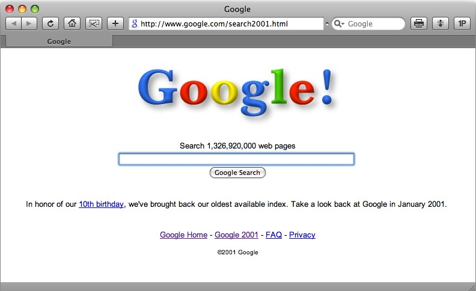

Em 2008, Google permitiu a usuários que fizessem buscas como se estivessem em 2001.
Em 2008, no seu aniversario de 10 anos, o Google permitiu que os usuários usassem uma de suas versões do ano em que nasceu.
O endereço era "https://google.com/search2001.html". Mantinha o mesmo layout e logo da época e ainda a afirmação de 1.326.920.000 páginas registradas.